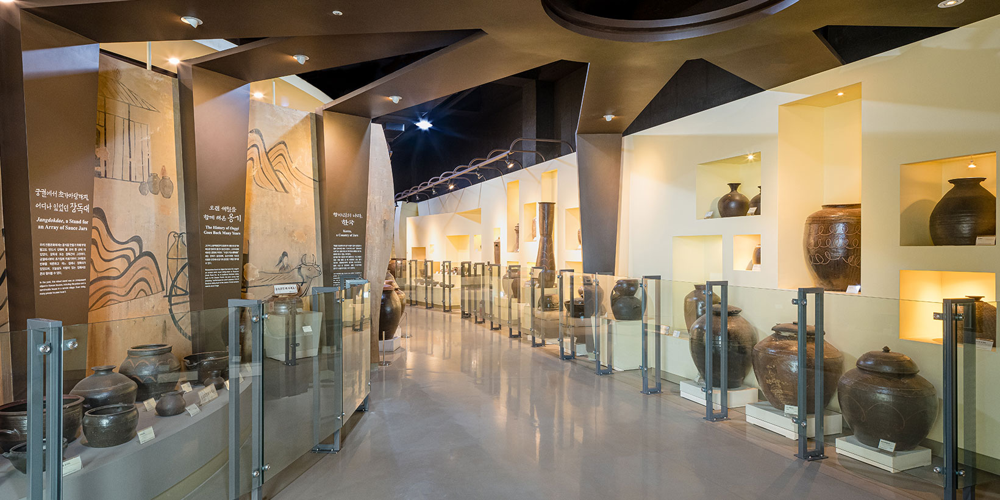

Bucheon City Museum
Permanent exhibitions
Potters once fired their wares at Yeowol-dong in Bucheon. Two galleries trace how onggi were made and how their uses varied by region.
Explore the galleries →Permanent exhibitions · European Porcelain Gallery부천시립박물관
Permanent exhibitions

Traditional pottery
Onggi Galleries 1 and 2

Local history
Bucheon Local History Gallery
European porcelain
European Porcelain Gallery

History of education
Education Gallery

Viewing stones
Viewing Stones Gallery
Gallery photographs: Bucheon Museums.
Bucheon Local History GalleryHan Jun’s epitaph
Stone case and blue-and-white porcelain epitaph, 17th century
The stone case and epitaph of Han Jun (1542–1601) were unearthed when his tomb was moved in 2013. They were donated to the museum in March 2024.
Films

In preparationCollection films
The films are in preparation. In the meantime, read the labels for the Hoeryong jar, the Gallé vase and a school textbook.
Film catalogue →